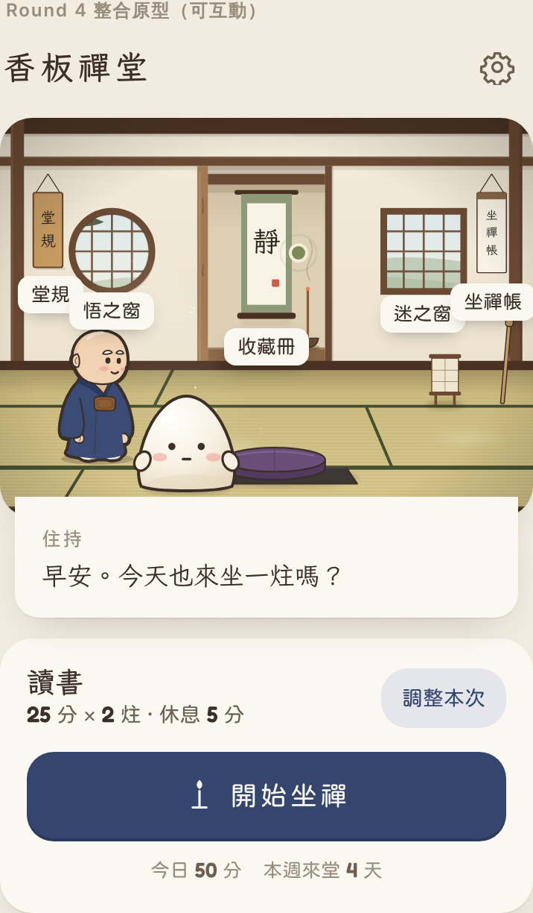
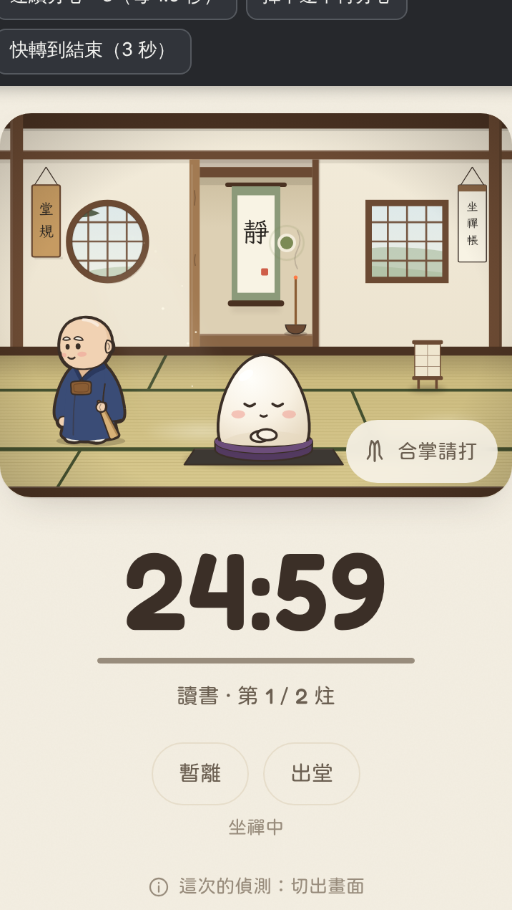
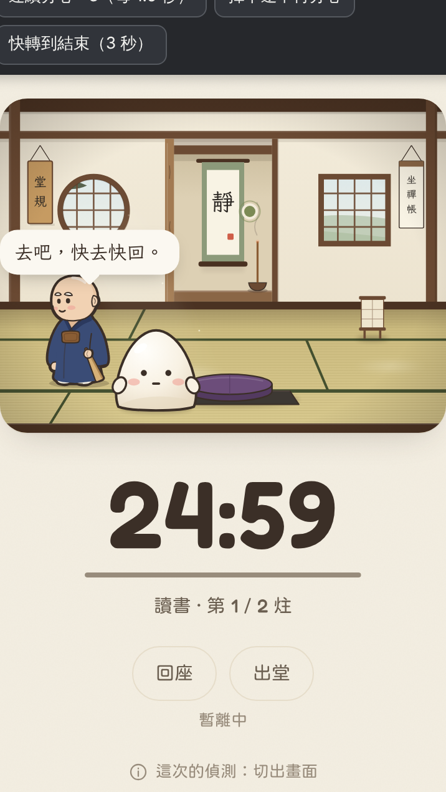
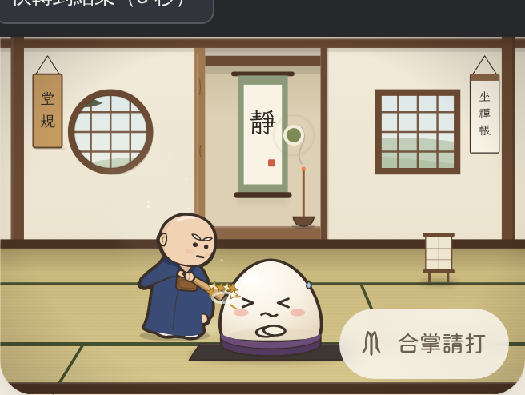
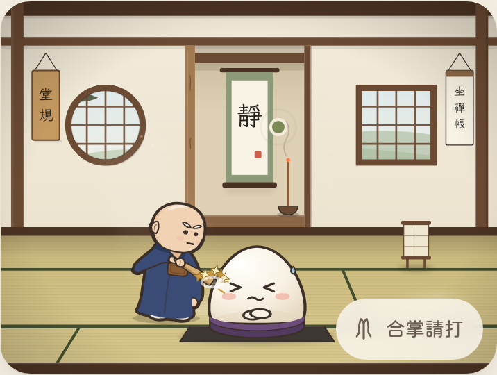
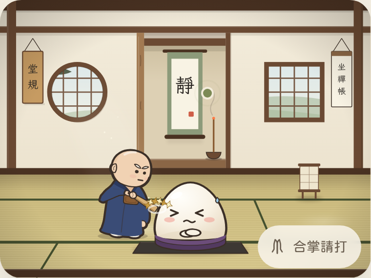
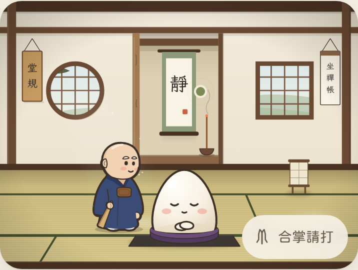
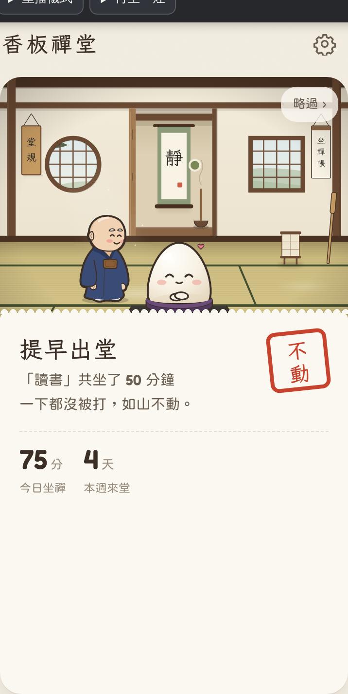
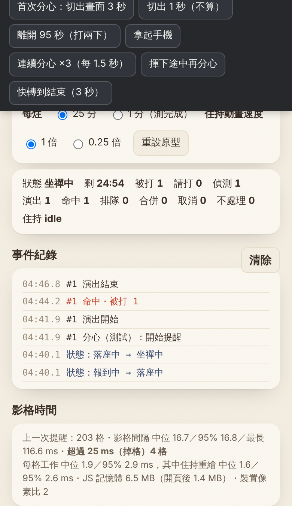

香板禪堂 Round 4：住持動畫整合原型
分支 feature/round4-monk-integration（從 main 68a414f 建立）。原型：design/round4/。正式版（src/、index.html）、Round 1 原型與 Round 3 審查頁都沒有被覆蓋。
monk-views2.js）。尚未選定。?seed=N 固定巡堂。
- 巡堂（
natural-patrol.js）：沿 Round 4.1 安全路點走；後方巡行、左右前方出巡、停下看麻糬；路線加權選擇，上一條 ×0.15、前一條 ×0.6、折回原處 ×0.35，不連續重複；換邊只經後方；停留 1.2–3 秒，偶有 4–7 秒靜止，前方停 2.4–4 秒。巡堂用自己的時鐘（rAF dt），頁面隱藏時停止。 - 畫法：每個姿勢（步態 8 相 × 正／背／左／右 × 神情、轉身影格）只在
<defs>建一次，舞台上一個<use>只換 href 和 transform，不逐格重建 SVG。Round 3.5 的MONK4.art與提醒動畫不變（另一個 renderer，交接時 actor 接手）。 - 提醒：分心時 ① 減速停步（0.26 秒）② 轉向麻糬、神情轉嚴肅（注意）③ 以安全路徑快步走到立點（從所在點、目前路段兩端、最近路點中取最短且腳印不進安全邊界者）④ 在立點恢復 3.5 的比例、朝向與位置 ⑤ 播放完整 3.5 提醒（舉起 → 打 → 收回）⑥ 回巡堂。計數方式與規則不變。
- 已知差異：注意的一拍改在巡堂中（嚴肅神情＋轉向），因新視角沒有舉著香板走的姿勢，舉起在立點才開始。
- 測試：
tests/round4_2b.test.mjs17 項全過；全套 108 項中 107 過，唯一失敗為已知的collect.test.mjs日期問題（季節規則未改，另行記錄）。3.5 回歸檢查（return-check）0 差異像素。 - 效能（無頭 Chromium，非實機）：60 秒巡堂 p50/p95 16.7 ms，無超過 33 ms 的幀；CPU 降速 4× 時 p99 33.4 ms、3493 幀中 20 幀超過 33 ms；巡堂每幀繪製約 0.004–0.011 ms；heap 60 秒增加約 0.17 MB；姿勢共建 44 個後 DOM 不再增加。
- 手機：360／390／412、375×600、844×390 無水平捲動、無錯誤；舞台上只有場景內的熱點（堂規、窗、收藏冊…），控制按鈕不覆蓋舞台。橫向 844×390 時舞台下半需捲動（沿用版面 B，未因巡堂改變）。
- 合掌請打移到舞台外：放在舞台下方與「暫離／出堂」同一列（版面 B，預設）；另一個候選是舞台正下方單獨一列（版面 A，
?ask=a）。?ask=stage可以看回原本在舞台上的位置做對照。顯示規則不變（只在坐禪中出現；暫離、落座、出堂、結算時隱藏；提醒進行中按了不處理）。底部加了安全區留白；測試列可以收起。截圖：shots/layout/（before＝原本、candA、candB；360×780、390×844、412×915、360×640、740×360）。 - 住持新視角候選：pose-review.html（正面、背面、側面、P3 側面→正面、P4 側面→背面，放大檢查、同比例並排、禪堂中預覽）。路段對照在 patrol-review.html 最後一節。
1. 盤點結果
| 項目 | Round 1 原型（design/round1/proto.html） | 正式版（src/app.js） |
|---|---|---|
| 入口與狀態 | 單一 HTML；畫面 home / focus / result / chars；一個 rAF 迴圈＋tween 引擎 | build.py 組成 index.html；P.phase：idle → settle → focus ⇄ leave → break → ready … → result |
| 計時 | 25 分、牆上時鐘、沒有暫停 | 牆上時鐘；暫離一炷一次（暫停）；背景中到時，回來才結束 |
| 分心觸發 | 只有示範按鈕 | 切出畫面 ≥ 2 秒（回來時打）、≥ 90 秒再補一下；平衡儀拿起手機（之後每 20 秒再打）；合掌請打 |
| 連續分心 | L3 互斥：進行中的打擊合併成計數不重播；10 秒內省略察覺／走近；1 分鐘內第 3 次輕點 | 全部排隊依序播放，每一下在命中時計數；忙碌時合掌請打不處理 |
| 住持／麻糬繪製 | 舊住持（Monk 類別、手臂整塊旋轉）；麻糬 Mochi 類別（表情、手、呼吸） | 舊住持 SVG；香板整根旋轉 |
| 背景化 | 回來時把 tween 直接跳到結束狀態 | 只處理計時與分心判定 |
2. 整合方式
- 不另畫住持：直接載入
../round3/monk4.js（造型）與../round3/anim.js（關鍵姿勢、關節、蒙皮、滯後、時間軸）。 - anim.js 的向下相容擴充：多一個「時間軸」參數（
makePlan），可以在已驗收的段落前面接上察覺、舉板、走近；不帶參數時與 3.5 完全相同（逐格比對 467 格，差 0；3.5 的終點像素比對仍是 0 差異）。新增idleNotice（垂放姿勢、頭轉向麻糬傾 6°、察覺表情）；角度改成每段各自展開（對既有段落沒有影響）。 - 動畫控制介面
design/round4/monk-actor.js（MonkActor）：遊戲只呼叫perform({ onImpact, onSeg })、abort()、walkTo()、face()；演出完全由 3.5 的系統計算。它有自己的時鐘，只在畫面有繪製時前進。 - 提醒的時間軸：察覺 450 → 舉板 420（60% 轉嚴肅）→ 走近（距離 ÷ 170，Round 1 速度）→（需要時轉身 180）→ 喝 300 → 已驗收的 舉起 200・預備 340・停頓 160・揮下 90・命中停格 135・收勢 260・收勢停 120・收板歸位 520・待機 120。
- 命中位置：住持站在 x = 132（3.5 驗收時的位置），所以命中點、麻糬反應與 3.5 相同。Round 1 原本走到 x = 140。
- 麻糬：沿用 Round 1 的 Mochi（表情、呼吸）。命中後的壓扁 1.07／0.88、停格、阻尼回彈與表情（吃痛 → 委屈）直接取 3.5 的
mochiAt；命中前的「驚訝、看向住持」與收尾的「委屈 → 平靜」沿用 Round 1。 - 圖層：住持身體在麻糬後面（monkSlot），揮下到收板一半時香板與拳頭在麻糬前面（fxSlot），與 3.5 相同。
3. 連續分心：規則差異與建議
Round 1 規格與正式版的實作不同。我沒有自行決定，原型裡兩種都做了，測試面板可以切換（預設為正式版）。
| 情況 | 正式版規則（預設） | Round 1 規格 |
|---|---|---|
| 提醒播放中又分心 | 排隊，播完再播下一個 | 合併，不重播；結束時說「又分心了 N 次」 |
| 計數 | 每個事件在命中那一刻算一次 | 規格寫「計數規則不變，只改演出」→ 被合併的在發生時就算 |
| 10 秒內再分心 | 照常完整演出 | 省略察覺與走近（香板仍要從垂放舉起，因為新住持待機時香板是垂著的） |
| 1 分鐘內第 3 次 | 照常 | 輕點。新住持沒有設計過輕點姿勢，這裡只把星星、晃動拿掉、音量降到約 1/3，動作還是完整的一下 |
| 播放中合掌請打 | 不處理 | 合併（不計入被打） |
兩種規則都遵守的保護
- 只有「坐禪中」會接受分心事件；落座、暫離、計時完成、出堂後的事件一律不處理，並寫進紀錄。
- 每個事件只計數一次（命中時），重播、合併都不會再算。
- 暫離：計時立刻停；排隊中的提醒取消；正在播放的那一下播完（它發生在坐禪中，照正式版算一下），播完麻糬才起身。正式版沒有取消排隊這一步（暫離後排隊的還會繼續打），這是本原型的差異，建議正式版也這樣做。
- 出堂（重設）：正在播放的提醒立即中止，住持直接回到垂放姿勢，尚未命中的不計數；排隊全部取消。
- 計時完成：之後的事件不處理；正在播放的那一下播完才進結算。
- 背景化：沒有影格時住持的時鐘不走，回來從同一格繼續（不跳格、不重播）；離開時間依正式版規則判定（≥ 2 秒打一下、≥ 90 秒再補一下）。
4. 測試
新增的整合測試 tests/round4.test.mjs（12 項）
| # | 內容 | 結果 |
|---|---|---|
| 1 | 專注中：計時在走、住持巡堂、不會自己打 | 通過 |
| 2 | 首次分心：完整演出、命中前不計數、命中時計一次、回到垂放、麻糬比例回到 1 | 通過 |
| 3 | 離開 < 2 秒不算；≥ 90 秒打兩下 | 通過 |
| 4 | 正式版規則：連續 3 次排隊、各打一次；忙碌時合掌請打不處理 | 通過 |
| 5 | Round 1 規則：播放中的合併、計數、只演一次 | 通過 |
| 6 | 揮下途中再分心：不會重複命中、第一下不會算兩次 | 通過 |
| 7 | 提醒途中暫離：計時停、排隊取消、暫離中不接受事件、回座從原處繼續 | 通過 |
| 8 | 揮下途中出堂：住持立即回到垂放、不計數、進結算 | 通過 |
| 9 | 提醒途中計時完成：那一下播完才結算，之後不計 | 通過 |
| 10 | 背景化（不給影格 2 秒）：住持時鐘不前進，回來從原處繼續 | 通過 |
| 11 | 減少動態：仍有提醒（停在關鍵姿勢、不揮、不走），計數一次 | 通過 |
| 12 | 真的 visibilitychange：離開 ≥ 2 秒回來被抓一次；暫離中離開不算 | 通過 |
另外：Round 3 審查頁使用的預設時間軸與 3.5 版逐格比對差 0；design/round3/checks/return-check.mjs 仍是 0 差異像素。
既有測試失敗：collect.test.mjs「雪」
原因：與日期有關的測試資料，不是產品問題。「雪」的條件是冬天坐滿 10 炷。測試用 tenDays() 產生「今天往回連續 10 天」的紀錄，並期待當季的掛軸已解鎖。今天是 11 月初，10 天裡有一部分落在 10 月（秋天），冬天只有 11 月那幾天，不到 10 炷，所以「雪」仍鎖著——產品的判斷是對的。
什麼時候會失敗：每季第一個月的 1–9 號（2、5、8、11 月），四季都一樣；其他日子會通過。與時區無關（季節用的是本地月份，測試和頁面在同一台機器）。這個測試檔與 src/ 在本分支都沒有改動，整合前後結果相同。
修正方案（獨立，不放進本分支）：只改測試、不改季節規則。在這個測試固定時鐘，例如用 Playwright 的 context.clock.setSystemTime(new Date('2026-12-20T10:00:00'))，並讓 entry()／day() 用同一個時間；或讓該測試的 10 筆紀錄都落在同一季內（以季中某天為基準往回 10 天）。等你同意後另開分支處理。
5. 效能（無頭瀏覽器，不是實機）
| 條件 | 提醒期間影格間隔（中位／95%） | 超過 25 ms 的格 | 每格 JS 工作（中位／95%） |
|---|---|---|---|
| 桌機 CPU（不降速） | 16.7／16.8 ms | 0 / 約 190 格 | 1.6／2.6 ms |
| CPU 降速 4 倍（模擬中階手機） | 16.7–33／33 ms | 約 40–55% | 7.5／14 ms |
| CPU 降速 6 倍（模擬低階手機） | 33／50–67 ms | 約 90% | 11／20 ms |
- 負擔來源：提醒期間（約 3.5 秒）住持每格整個重建 SVG（約 25 KB 字串；計算姿勢 0.23、組字串 0.49、解析與排版 1.0 ms／桌機）。巡堂、待機時只改位置，不重建。內容沒變的格（走近、停格等）已略過重建。
- 記憶體：連續 20 次提醒後 JS heap 從 2.1 增加到 2.5 MB（強制 GC 後），DOM 節點數不變，沒有看到持續成長。
- 建議（下一步，會動到已驗收的繪製結構，所以本輪沒做）：把頭、袍身、衣領、遠側袖等不變的部分只畫一次，每格只重建近側手臂、袖子與香板，預期可省一半以上；改完需再跑 3.5 的像素比對。
- 原型的測試面板會即時顯示上一次提醒的影格間隔、掉格數、住持重繪時間、JS 記憶體（Chrome／Android 才有）與裝置像素比，請在手機上看這些數字。
6. 手機版面









360、390、412 寬與 844×390 橫向都沒有水平捲動。場景是固定 400×300 的 viewBox，住持與麻糬比例在各寬度一致。
7. 與 Round 1 原型行為的差異
- 住持換成 Round 3.5 版；打擊改成 3.5 的時間軸（Round 1 的「舉板 380、停頓 170、揮下 85、hit-stop 70」由 3.5 的段落取代，命中停格就是 135 ms 的姿勢停格，不再凍結整個畫面）。
- 舉板改為「從垂放舉到肩上」再走近（新住持待機時香板是垂著的）。走近停在 x = 132。
- 麻糬命中後的「揉頭、左右搖」沒有接（3.5 驗收的是壓扁、停格、回彈與表情）。
- Round 1 住持的待機表演只保留慢眨眼、看窗外、看麻糬、點頭、笑（用新住持的表情與頭部傾斜做）；「整理袖子」「喝茶」需要新住持沒有的手臂姿勢，沒有接。
- 加上正式版的暫離／回座、出堂確認、背景時間判定；計時長度可選 1 分（測試用）。
- 拿掉「角色」頁與「對照 v20」（都是舊住持）。
8. 尚未測試（Not tested）
- Android 實機瀏覽器與已安裝的 PWA：影格時間、掉格、記憶體、背景化回來的行為。
- iPhone Safari。
- 平衡儀（拿起手機）的真實偵測：本原型只有模擬按鈕；正式版的偵測與每 20 秒補打沒有移植。
- 手機安全區域：Round 1 原型沒有處理
env(safe-area-inset-*)，在瀏海機以全螢幕 PWA 開啟時頂部控制列可能被遮；一般瀏覽器分頁沒有問題。 - 休息（break）與多炷流程：Round 1 原型只有一炷，沒有接。
- 實際的高密度螢幕上的線條清晰度（無頭瀏覽器只截了 2 倍圖）。